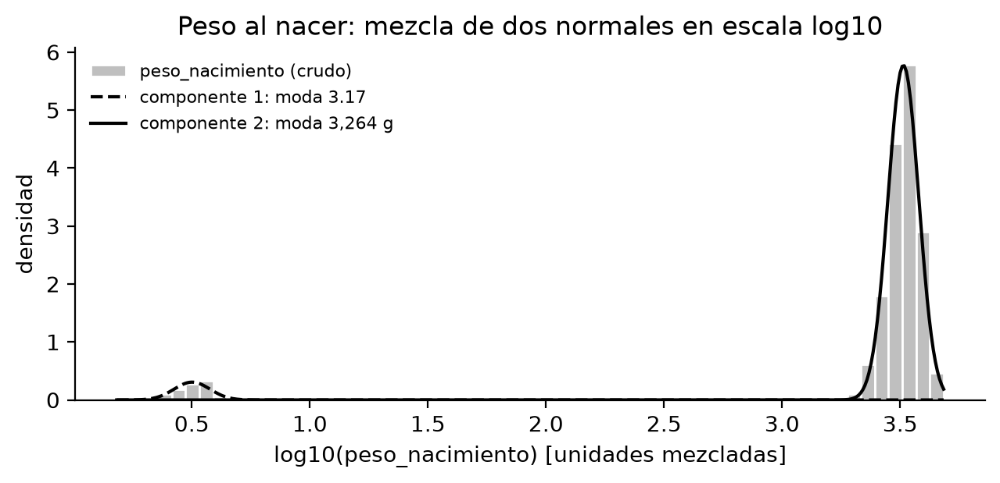
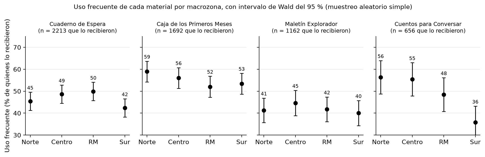
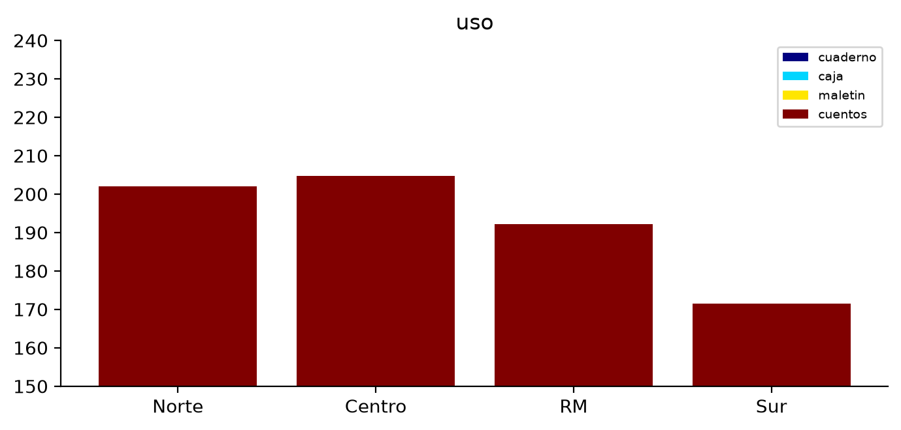
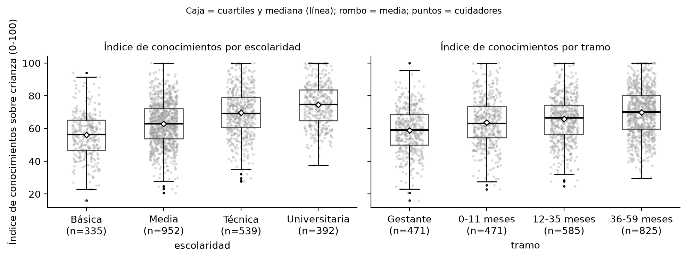
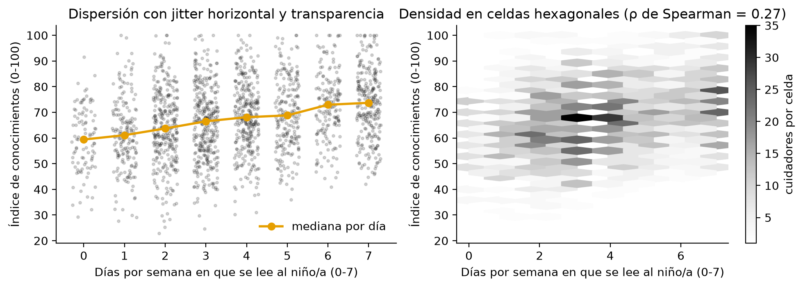
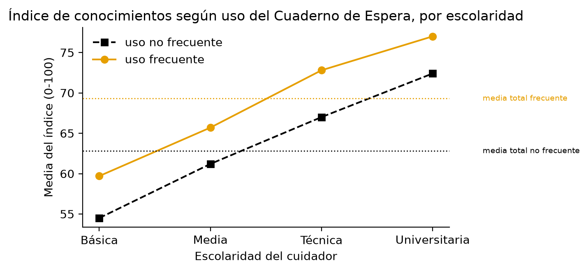
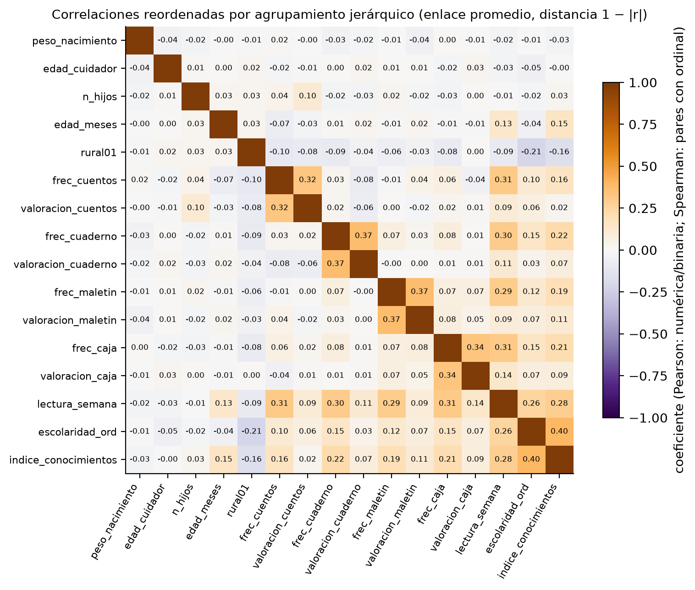

Tarea 1 · INF396 Introducción a la Ciencia de Datos · Joaquín Fernández · octubre de 2026
Declaración de uso de IA. El código del cuaderno tarea1_fernandez_joaquin.ipynb y la primera redacción de todas las secciones
de este informe se generaron con ayuda de Claude Code (Anthropic), a partir del enunciado y de los resultados que produce el cuaderno.
El autor revisó el código, los números y el texto, y es responsable de lo que aquí se afirma. Las conclusiones legales de la parte 6
son una lectura propia de las normas citadas, no asesoría jurídica.
1a. Hipótesis contrastables. Nivel $\alpha = 0{,}05$ bilateral en todos los casos.
| Pregunta | $H_0$ | $H_1$ | Estadístico | Efecto mínimo relevante (EMR) |
|---|---|---|---|---|
| Cobertura y uso | La proporción de uso frecuente de cada material es igual en las cuatro macrozonas | Difiere en al menos un par | Test de Wald para dos proporciones, por pares, familia de 24 contrastes | 10 puntos porcentuales |
| Pertinencia y valoración | Al menos el 80 % de quienes reciben cada material lo considera pertinente ($p \ge 0{,}80$) | $p < 0{,}80$ | Test de Wald para una proporción, unilateral | 10 pp bajo la meta (70 %) |
| Resultados | La mediana del índice de conocimientos es igual entre quienes usan con frecuencia el Cuaderno y quienes nunca lo usan | Difiere | Test de permutación de la diferencia de medianas; IC bootstrap | 5 puntos del índice |
Por qué esos efectos. Una brecha de 10 pp en uso frecuente entre macrozonas equivale a que, de cada diez familias que reciben el material, una más lo deje en el cajón: es el umbral desde el cual el servicio redistribuiría acompañamiento o rediseñaría la entrega en una zona. Una pertinencia bajo 70 % (meta 80 %) justifica rediseñar el material para la edad. Cinco puntos del índice (0-100) es media desviación de lo que separa a un cuidador con educación básica de uno con media; menos que eso no cambia una decisión de continuidad.
1b. Control del error en la familia de la parte 4c. Se aplicará Holm (control fuerte del error global, FWER, al 5 %). Un falso positivo lleva al servicio a intervenir una macrozona (logística, capacitación, presupuesto) por una diferencia que no existe, y a explicar públicamente una brecha territorial inexistente; ese costo es alto y concentrado, por lo que conviene controlar la probabilidad de cometer al menos un error en la familia. Benjamini-Hochberg (FDR) se reportará como comparación, porque sería la elección si el objetivo fuera sólo priorizar zonas para una segunda mirada.
1c. Reglas de exclusión y corrección, fijadas antes de ver los datos.
| Problema | Acción | Regla |
|---|---|---|
| Duplicado exacto | Se excluye | Se conserva la primera aparición de cada fila repetida; luego se verifica que id_cuidador no se repita. |
| Valor fuera de dominio (escalas 1-5, índice 0-100, lectura 0-7, edades) | Se marca faltante | El registro se conserva; el valor pasa a NaN. |
| Código centinela en una numérica (p. ej. −99, 999) | Se marca faltante | Idem; se detecta como valor imposible y repetido. |
| Inconsistencia entre fechas (entrega posterior a la encuesta, fecha no interpretable) | Se marca faltante la fecha de entrega | No se usa en el análisis; el registro se conserva. |
| Variante de escritura en una categórica | Se corrige | Mapa a la forma canónica tras quitar tildes, mayúsculas y espacios. |
| Columna numérica con unidades mezcladas | Se corrige | Sólo si una mezcla de dos normales en escala log y el IC bootstrap del cociente de modos validan un factor de una tabla fijada de antemano (1.000 kg→g; 453,6 lb→g; 28,35 oz→g; 100; 10). Si ningún factor es compatible, se marca faltante. |
| Inconsistencia lógica (uso informado sin recibir; material informado en tramo no elegible) | Se marca faltante | Se reporta; el registro se conserva. |
El plan no se modificó después. Donde el análisis se apartó de él se indica en la sección correspondiente.
2a. Clasificación de columnas.
| Columna(s) | Escala | Estructura | Operaciones con sentido |
|---|---|---|---|
id_cuidador |
nominal | identificador | contar, unir; ninguna aritmética |
id_centro |
nominal | conglomerado | agrupar; define la unidad de muestreo y el deff |
macrozona, region, rural, sexo_cuidador, migrante, pueblo_originario |
nominal | categórica (dicotómicas codificables 0/1) | frecuencias y proporciones |
tramo, escolaridad |
ordinal | categórica ordenada | orden, mediana; promediar sólo codificada y suponiendo distancias iguales |
uso_<m> |
ordinal (Nunca < Ocasional < Frecuente) | categórica ordenada | orden, proporción por nivel; promediar no tiene sentido sin codificar |
valoracion_<m> |
ordinal (Likert 1-5) | categórica ordenada | mediana, % en 4-5; la media exige suponer equidistancia |
recibio_<m>, pertinente_<m> |
nominal | categórica dicotómica | proporción |
edad_meses, semanas_gestacion, peso_nacimiento, edad_cuidador |
razón | numérica | media, mediana, diferencias y cocientes (peso exige unidad única) |
n_hijos, lectura_semana |
razón (conteo) | numérica discreta | media, mediana; lectura_semana está acotada en 0-7 |
indice_conocimientos |
intervalo (0-100) | numérica | media, mediana, diferencias; los cocientes no tienen sentido |
fecha_entrega, fecha_encuesta |
intervalo (fecha) | fecha; cíclica en día de semana o mes | diferencias entre fechas; no se promedian sin convertir |
2b. Vacío estructural vs. dato faltante. Un cuidador es elegible para un material si su tramo es el de entrega o uno posterior;
las columnas de uso, valoracion y pertinente exigen además haber recibido el material. Sobre el archivo crudo
(2.435 filas) se obtiene:
| Material | Elegibles | recibio: vacío estructural |
recibio: faltante |
uso/valoracion/pertinente: vacío estructural |
faltantes en uso / valoracion / pertinente |
|---|---|---|---|---|---|
| Cuaderno de Espera | 2.435 | 0 | 0 | 189 | 0 / 0 / 0 |
| Caja de los Primeros Meses | 1.946 | 489 | 0 | 720 | 0 / 0 / 0 |
| Maletín Explorador | 1.459 | 976 | 0 | 1.261 | 0 / 0 / 0 |
| Cuentos para Conversar | 851 | 1.584 | 0 | 1.768 | 0 / 0 / 0 |
Todo vacío de las columnas de materiales es estructural (no elegible o no recibió). El dato faltante real está en otras columnas:
escolaridad (136 tras depurar) y, una vez convertidos los centinelas, indice_conocimientos (48).
2c. Depuración declarativa. Cada regla es una función del archivo crudo que devuelve las filas que la violan y una acción;
el bloque produce el informe y el conjunto depurado sin corrección manual (celdas «Reglas declarativas» del cuaderno). Resultado:
2.435 → 2.400 filas, exactamente el diseño (120/120/150/210 por macrozona; se verifica con un assert).
| Regla | Acción | Registros |
|---|---|---|
| duplicado exacto (toda la fila repetida) | excluir | 35 |
| region: variante de escritura (mayúsculas/tildes) | corregir | 83 |
| indice_conocimientos: código centinela -99 | faltante | 48 |
| valoracion_cuaderno fuera de la escala 1-5 | faltante | 21 |
| valoracion_caja fuera de la escala 1-5 | faltante | 16 |
| valoracion_maletin fuera de la escala 1-5 | faltante | 13 |
| valoracion_cuentos fuera de la escala 1-5 | faltante | 8 |
| peso_nacimiento en kilogramos (valor < 132 g, componente 1 de la mezcla) | corregir | 112 |
| fecha_entrega posterior a fecha_encuesta | faltante | 23 |
| Otras 15 reglas (id repetido, región fuera de su macrozona, índice fuera de 0-100, edad fuera de tramo, semanas de gestación, lectura 0-7, edad del cuidador, uso informado sin recibir, material en tramo no elegible, fecha no interpretable) | — | 0 |
Unidades mezcladas en peso_nacimiento. En escala $\log_{10}$ el peso tiene dos modas (figura 1). Una mezcla de dos normales
ajustada por EM da componentes con modas 3,17 y 3.264 (pesos 5,9 % y
94,1 %) y un cociente de modas de 1.029,6, con IC bootstrap del 95 % [998,5; 1.066,2]
(500 réplicas). De la tabla de factores fijada en 1c, el único compatible con el intervalo es kg → g (1.000); 453,6 y 28,35
quedan fuera. Por eso los 112 valores del componente bajo (umbral de decisión de la mezcla:
132 g) se multiplican por 1.000. La inspección («parecen kilos») sólo sugiere; el intervalo del cociente es lo que
autoriza el factor. Tras corregir, el peso queda en 1.520-4.833 g, con una sola moda.

2d. Faltantes en escolaridad. Faltan 136 valores (5,7 %). Si el mecanismo fuera completamente
aleatorio (MCAR), la tasa de faltante sería la misma en todo subgrupo. No lo es: falta en el 11,3 % de los
rurales y en el 4,0 % de los urbanos ($\chi^2$ = 40,2, gl = 1,
p < 0,001); por macrozona va de 3,0 % en RM a 10,2 % en Sur
($\chi^2$ = 33,0, gl = 3, p < 0,001). Entre los registros sin escolaridad el
44,9 % es rural y el 44,9 % es del Sur,
frente a 21,1 % y 23,8 % entre los
que sí la tienen. El mecanismo depende de variables observadas (al menos MAR, no MCAR). Imputar por la moda («Media») asignaría
educación media a cuidadores que son desproporcionadamente rurales y del Sur, donde la escolaridad básica es más frecuente: inflaría
la categoría modal, reduciría la varianza y sesgaría hacia arriba la escolaridad de esos grupos, atenuando la relación
escolaridad-índice. Si necesitara la variable completa usaría imputación múltiple (o, al menos, imputación por regresión/modelo
condicionada a rural, macrozona, tramo, indice_conocimientos y lectura_semana), reportando la varianza entre imputaciones;
para las tablas de este informe simplemente se excluye el faltante y se declara.
3a. Estructura de la muestra. Coincide con el diseño: 600 por macrozona, 120/120/150/210 por tramo.
| Tramo | Norte | Centro | RM | Sur | Total |
|---|---|---|---|---|---|
| Gestante | 120 | 120 | 120 | 120 | 480 |
| 0-11 meses | 120 | 120 | 120 | 120 | 480 |
| 12-35 meses | 150 | 150 | 150 | 150 | 600 |
| 36-59 meses | 210 | 210 | 210 | 210 | 840 |
| Total | 600 | 600 | 600 | 600 | 2.400 |
Cuidadores que evalúan cada material: Cuaderno 2.400, Caja 1.920, Maletín 1.440, Cuentos 840 (elegibles por tramo). Recibieron el material: 2.213, 1.692, 1.162 y 656; es decir, cobertura nacional (promedio de macrozonas) de 92,2 %, 88,1 %, 80,7 % y 78,1 %.
3b. Figura principal.

Canales. La variable que se compara (proporción de uso frecuente) va a la posición en una escala común (eje vertical, el canal más preciso en la jerarquía de Cleveland y McGill); la macrozona va a la posición en el eje horizontal dentro de cada panel, y el material a las facetas, de modo que cada comparación entre macrozonas se hace dentro de un panel con el mismo eje. El intervalo se codifica con longitud (barra de error), el siguiente canal en precisión. No se usa el color para codificar datos: todo se lee en escala de grises. No se usó un gráfico de torta porque obligaría a juzgar ángulos y áreas (los canales menos precisos) y además no admite intervalos de confianza; no se usaron barras apiladas porque sólo el segmento inferior tiene una base común: los demás se comparan por longitud sin alineación, y cuatro materiales con distinto denominador (quienes lo recibieron) no suman nada interpretable.

Qué hace mala a la figura 3. Apila proporciones con distinto denominador (la suma «202 %» no significa nada); el eje parte en 150, lo que exagera la diferencia entre Sur y el resto; las barras de arriba no comparten base y no se pueden comparar; usa la paleta jet, que en escala de grises es indistinguible y cuyo brillo no es monótono; no hay intervalos, el título es «uso» y los ejes no tienen rótulo ni unidad.
3c. Índice de conocimientos por escolaridad y por tramo.
| Escolaridad | n | Q1 | Mediana | Q3 | Media |
|---|---|---|---|---|---|
| Básica | 335 | 46,8 | 56,3 | 65,2 | 56,1 |
| Media | 952 | 53,8 | 62,9 | 72,3 | 62,9 |
| Técnica | 539 | 60,6 | 69,2 | 79,0 | 69,6 |
| Universitaria | 392 | 64,8 | 74,6 | 83,7 | 74,6 |
| Tramo | n | Q1 | Mediana | Q3 | Media |
|---|---|---|---|---|---|
| Gestante | 471 | 50,0 | 59,1 | 68,6 | 58,8 |
| 0-11 meses | 471 | 54,4 | 63,0 | 73,5 | 63,8 |
| 12-35 meses | 585 | 56,5 | 66,4 | 74,4 | 65,8 |
| 36-59 meses | 825 | 59,7 | 70,0 | 80,2 | 69,9 |

La mediana sube monótonamente con la escolaridad (56,3 → 74,6) y con el tramo (59,1 → 70,0); los rangos intercuartílicos son parecidos (18-20 puntos), así que las distribuciones se desplazan sin cambiar mucho de dispersión. La forma es aproximadamente simétrica (asimetría global -0,02), con cola corta hacia abajo (mínimos de 16-38) y techo en 100 que recorta levemente la cola superior en los grupos altos. Los valores extremos son pocos y plausibles, no errores. Como media y mediana casi coinciden en cada grupo, la media es un resumen apropiado para describir y comparar; la mediana se mantiene en la parte 4e porque es robusta al techo de la escala.
3d. Lectura semanal e índice.

lectura_semana toma ocho valores, de modo que un diagrama de dispersión crudo apila cientos de puntos en ocho columnas. Se resolvió
con jitter horizontal, transparencia y la mediana por día (izquierda) y con densidad en celdas hexagonales (derecha). La relación
es positiva y monótona: la mediana del índice pasa de 59,4 con 0 días a
73,7 con 7 días ($\rho$ de Spearman = 0,27, n = 1.881), con mucha
dispersión dentro de cada día.
3e. Uso frecuente del Cuaderno e índice: toda la muestra y por escolaridad.
| Estrato | n frecuente | Media frecuente | n no frecuente | Media no frecuente | Diferencia | % con uso frecuente |
|---|---|---|---|---|---|---|
| Toda la muestra | 1.013 | 69,3 | 1.158 | 62,8 | 6,6 | 46,7 % |
| Básica | 96 | 59,7 | 208 | 54,5 | 5,2 | 31,6 % |
| Media | 398 | 65,7 | 485 | 61,2 | 4,5 | 45,1 % |
| Técnica | 249 | 72,8 | 248 | 67,0 | 5,8 | 50,1 % |
| Universitaria | 210 | 77,0 | 156 | 72,4 | 4,6 | 57,4 % |

En toda la muestra la diferencia es de 6,6 puntos, pero dentro de cada nivel de escolaridad es menor (4,5 a 5,8). Es confusión por escolaridad: la escolaridad determina a la vez el uso (uso frecuente del 31,6 % en básica al 57,4 % en universitaria) y el índice (medianas de 56,3 a 74,6). Al comparar usuarios frecuentes con el resto en la muestra completa se compara, en parte, cuidadores más escolarizados con menos escolarizados, y una fracción de la brecha es de la escolaridad, no del material. Aquí la confusión atenúa sin invertir el signo; la paradoja de Simpson es el caso extremo en que el signo dentro de los estratos es contrario al global. La lectura honesta de la asociación es la diferencia dentro de estratos (unos 5 puntos), que es justo el EMR declarado.
3f. Matriz de correlaciones.

Se codificó uso frecuente como 0/1 por material, escolaridad como 1-4 y rural como 0/1. El coeficiente depende de la escala del par:
Spearman cuando interviene una ordinal (escolaridad, valoraciones), porque sólo el orden es interpretable y la codificación 1-4 no
garantiza equidistancia (65 pares); Pearson entre numéricas y con binarias (55 pares), donde
coincide con el punto-biserial (numérica-binaria) y con $\phi$ (binaria-binaria). El reordenamiento (enlace promedio sobre la distancia
$1-|r|$) deja ver tres bloques: (i) cada indicador de uso frecuente con la valoración del mismo material ($r_s$ = 0,32-0,37) y con
lectura_semana (0,29-0,31); (ii) escolaridad, lectura_semana e indice_conocimientos (0,40 entre escolaridad e índice),
con rural en negativo (−0,21 con escolaridad); (iii) las demográficas del niño y del cuidador (peso_nacimiento, edad_cuidador,
n_hijos), prácticamente incorrelacionadas con todo. Ninguna correlación supera 0,40: las asociaciones son reales pero modestas.
4a. Proporción nacional de uso frecuente, correlación intraclase y efecto de diseño. La estimación nacional promedia las cuatro macrozonas con peso igual, $\hat p = \frac14\sum_z \hat p_z$, con $\mathrm{EE} = \frac14\sqrt{\sum_z \hat p_z(1-\hat p_z)/n_z}$. Si las macrozonas tuvieran pesos poblacionales distintos (la RM concentra cerca del 40 % de los nacimientos), el promedio ponderado se movería hacia el valor de la RM y el error estándar cambiaría según $\sum_z w_z^2 \mathrm{Var}(\hat p_z)$. El ICC se estima con el ANOVA de un factor sobre el indicador 0/1 entre quienes recibieron el material, $\hat\rho_I = (CMB-CMD)/(CMB+(\bar m-1)CMD)$, y $\mathrm{deff} = 1+(\bar m-1)\hat\rho_I$. El deff multiplica la varianza, así que el error estándar se multiplica por $\sqrt{\mathrm{deff}}$ (interpreto así el enunciado). Ningún $\hat\rho_I$ resultó negativo; podría ocurrir porque el estimador ANOVA es una diferencia de cuadrados medios: si los centros son más homogéneos entre sí de lo que daría el azar (CMB < CMD), la diferencia es negativa aunque el parámetro sea $\ge 0$, y se trunca en cero.
| Material | n recibió | $\hat p$ nacional | IC 95 % (MAS) | $\bar m$ | $\hat\rho_I$ | deff | IC 95 % con deff | ancho MAS → deff |
|---|---|---|---|---|---|---|---|---|
| Cuaderno de Espera | 2.213 | 46,6 % | [44,5; 48,7] | 18,4 | 0,044 | 1,77 | [43,8; 49,4] | 4,1 pp → 5,5 pp |
| Caja de los Primeros Meses | 1.692 | 55,1 % | [52,7; 57,5] | 14,1 | 0,037 | 1,49 | [52,2; 58,0] | 4,7 pp → 5,8 pp |
| Maletín Explorador | 1.162 | 41,9 % | [39,1; 44,7] | 9,7 | 0,036 | 1,31 | [38,7; 45,1] | 5,7 pp → 6,5 pp |
| Cuentos para Conversar | 656 | 49,0 % | [45,2; 52,8] | 5,5 | 0,053 | 1,24 | [44,8; 53,2] | 7,5 pp → 8,4 pp |
Cerca de la mitad de las familias que reciben un material lo usa con frecuencia (42 % el Maletín, 55 % la Caja). El ICC es pequeño (0,04-0,05) pero, con 10 a 18 cuidadores por centro, el deff llega a 1,77 para el Cuaderno: los intervalos se ensanchan entre 11 % (Cuentos, pocos cuidadores por centro) y 33 % (Cuaderno). El muestreo por conglomerados cuesta el equivalente a perder entre un 20 % y un 45 % de la muestra.
4b. Dos contrastes puntuales (Wald, dos proporciones, sin corrección por conglomerados).
| Material | Contraste | $\hat p_1$ | $\hat p_2$ | Diferencia | IC 95 % | z | p bilateral |
|---|---|---|---|---|---|---|---|
| Cuaderno de Espera | RM − Norte | 49,9 % | 45,4 % | 4,5 pp | [-1,4; 10,4] | 1,51 | 0,1322 |
| Cuentos para Conversar | Centro − Sur | 55,4 % | 35,8 % | 19,6 pp | [9,1; 30,2] | 3,64 | < 0,001 |
Cuaderno, RM vs. Norte: la diferencia de 4,5 pp no es significativa (p = 0,13) y el intervalo incluye tanto el cero como el EMR de 10 pp: el estudio no puede afirmar ni descartar una brecha relevante; es un resultado no concluyente, no una igualdad. Cuentos, Centro vs. Sur: 19,6 pp con p < 0,001; la estimación duplica el EMR, pero el intervalo [9,1; 30,2] es ancho (n = 210 por macrozona de diseño, 166 y 162 que recibieron) e incluye valores apenas sobre el EMR: es significativa y probablemente relevante, con magnitud mal determinada. Sin corregir por conglomerados ni por multiplicidad, ambos valores p son optimistas (ver 4a y 4c).
4c. Las 24 comparaciones como una familia. Valores p ordenados; Holm fue la corrección declarada, BH la alternativa.
| # | Material | Par | Dif. (pp) | IC 95 % (pp) | p | p Holm | p BH | Holm | BH |
|---|---|---|---|---|---|---|---|---|---|
| 1 | Cuentos | Norte − Sur | 20,6 | [10,0; 31,1] | 0,0001 | 0,0033 | 0,0033 | sí | sí |
| 2 | Cuentos | Centro − Sur | 19,6 | [9,1; 30,2] | 0,0003 | 0,0063 | 0,0033 | sí | sí |
| 3 | Cuaderno | RM − Sur | 7,5 | [1,6; 13,4] | 0,0122 | 0,2682 | 0,0975 | no | no |
| 4 | Cuentos | RM − Sur | 12,7 | [2,0; 23,3] | 0,0197 | 0,4146 | 0,1185 | no | no |
| 5 | Cuaderno | Centro − Sur | 6,3 | [0,4; 12,2] | 0,0358 | 0,7163 | 0,1711 | no | no |
| 6 | Caja | Norte − RM | 6,9 | [0,2; 13,6] | 0,0428 | 0,8127 | 0,1711 | no | no |
| 7 | Caja | Norte − Sur | 5,6 | [-1,1; 12,2] | 0,1030 | 1,0000 | 0,3531 | no | no |
| 8 | Cuaderno | Norte − RM | -4,5 | [-10,4; 1,4] | 0,1322 | 1,0000 | 0,3967 | no | no |
| 9 | Cuentos | Norte − RM | 7,9 | [-2,9; 18,7] | 0,1509 | 1,0000 | 0,4024 | no | no |
| 10 | Cuentos | Centro − RM | 7,0 | [-3,8; 17,7] | 0,2057 | 1,0000 | 0,4936 | no | no |
| 11 | Caja | Centro − RM | 4,0 | [-2,7; 10,7] | 0,2450 | 1,0000 | 0,5063 | no | no |
| 12 | Maletín | Centro − Sur | 4,6 | [-3,5; 12,7] | 0,2672 | 1,0000 | 0,5063 | no | no |
| 13 | Cuaderno | Norte − Centro | -3,3 | [-9,1; 2,6] | 0,2742 | 1,0000 | 0,5063 | no | no |
| 14 | Cuaderno | Norte − Sur | 3,0 | [-2,9; 8,9] | 0,3132 | 1,0000 | 0,5370 | no | no |
| 15 | Caja | Norte − Centro | 2,9 | [-3,7; 9,6] | 0,3859 | 1,0000 | 0,6174 | no | no |
| 16 | Maletín | Norte − Centro | -3,3 | [-11,3; 4,7] | 0,4166 | 1,0000 | 0,6249 | no | no |
| 17 | Caja | Centro − Sur | 2,6 | [-4,1; 9,3] | 0,4450 | 1,0000 | 0,6282 | no | no |
| 18 | Maletín | Centro − RM | 2,8 | [-5,2; 10,9] | 0,4871 | 1,0000 | 0,6494 | no | no |
| 19 | Maletín | RM − Sur | 1,8 | [-6,3; 9,8] | 0,6689 | 1,0000 | 0,7863 | no | no |
| 20 | Cuaderno | Centro − RM | -1,2 | [-7,1; 4,6] | 0,6775 | 1,0000 | 0,7863 | no | no |
| 21 | Caja | RM − Sur | -1,4 | [-8,1; 5,3] | 0,6880 | 1,0000 | 0,7863 | no | no |
| 22 | Maletín | Norte − Sur | 1,3 | [-6,7; 9,3] | 0,7550 | 1,0000 | 0,8237 | no | no |
| 23 | Cuentos | Norte − Centro | 0,9 | [-9,8; 11,6] | 0,8630 | 1,0000 | 0,9005 | no | no |
| 24 | Maletín | Norte − RM | -0,5 | [-8,4; 7,4] | 0,9063 | 1,0000 | 0,9063 | no | no |
Sin corrección «sobreviven» 6 contrastes; con Holm, 2; con BH, 2: Cuentos para Conversar, Sur frente a Norte y frente a Centro (unos 20 pp menos de uso frecuente en el Sur). Holm compara el $i$-ésimo valor p ordenado con $\alpha/(m-i+1)$, que parte en 0,00208 y crece lentamente; BH lo compara con $i\alpha/m$, que crece linealmente (0,00417 para $i$ = 2, 0,00625 para $i$ = 3). BH es más permisivo porque tolera que una fracción de los rechazos sea falsa; aquí ambos coinciden porque hay un vacío entre los dos valores p muy pequeños (< 0,001) y el tercero (0,012), que no pasa ni el umbral de BH para $i$ = 3. Las diferencias de 6-8 pp en Cuaderno y Caja que eran «significativas» sin corregir son el tipo de hallazgo que la familia de 24 contrastes produce por azar: uno o dos falsos positivos esperados a $\alpha$ = 0,05.
4d. Independencia entre uso (tres niveles) y macrozona para el Maletín Explorador. Entre los 1.162 que lo recibieron:
| Macrozona | Nunca | Ocasional | Frecuente | % Nunca | % Ocasional | % Frecuente |
|---|---|---|---|---|---|---|
| Norte | 76 | 99 | 123 | 25,5 % | 33,2 % | 41,3 % |
| Centro | 69 | 90 | 128 | 24,0 % | 31,4 % | 44,6 % |
| RM | 85 | 88 | 124 | 28,6 % | 29,6 % | 41,8 % |
| Sur | 89 | 79 | 112 | 31,8 % | 28,2 % | 40,0 % |
$\chi^2$ = 5,79, gl = 6, p = 0,45 (mínimo esperado 77, condiciones del test holgadas). No hay evidencia de que la distribución del uso dependa de la macrozona, lo que coincide con las seis comparaciones por pares del Maletín, ninguna significativa ni siquiera sin corregir (diferencias de 0,5 a 4,6 pp). El $\chi^2$ usa los tres niveles a la vez y un solo test, por lo que no necesita corrección por multiplicidad; los pares sólo miran «frecuente vs. resto».
4e. Diferencia de medianas del índice: uso frecuente vs. nunca del Cuaderno. Mediana 69,2 (n = 1.013) frente a 61,0 (n = 528): diferencia 8,2 puntos, IC bootstrap de percentiles 95 % [6,2; 9,9] (4.000 réplicas); test de permutación con 10.000 permutaciones: p = 0,0001 (ninguna permutación alcanzó la diferencia observada). La diferencia es estadísticamente clara y supera el EMR de 5 puntos. Aun así no es el efecto del material: los cuidadores no fueron asignados al uso, lo eligieron, y la escolaridad (parte 3e) determina a la vez quién usa el Cuaderno y cuánto sabe de crianza; la comparación mezcla el efecto del material con el de ser un cuidador más escolarizado (y, por la misma vía, más lector y de zona urbana). Dentro de estratos de escolaridad la diferencia baja a unos 5 puntos, y puede haber confusores no medidos (interés previo en la crianza, apoyo del centro de salud). Para estimar el efecto haría falta un diseño con asignación controlada: un ensayo aleatorizado del acompañamiento al uso (por centros de salud, con el mismo deff en mente) o, si no se puede negar el material, un escalonamiento aleatorio de la entrega (stepped wedge) o una regresión en discontinuidad sobre la fecha de inicio del programa, con medición previa del índice.
4f. Hipótesis preinscritas. H1 (uso igual entre macrozonas) se rechaza sólo para Cuentos (4c); H3 se rechaza (4e). Para H2 (pertinencia $\ge$ 80 %): Cuaderno 78,5 %, Caja 81,1 %, Maletín 77,8 %, Cuentos 82,3 %; los valores unilaterales p son 0,038, 0,88, 0,030 y 0,93. Cuaderno y Maletín quedan 1,5 y 2,2 pp bajo la meta, significativo al 5 % pero muy lejos del EMR de 10 pp: estadísticamente «bajo 80 %», irrelevante para una decisión. La valoración mediana es 4 en los cuatro materiales (68-71 % los califica 4 o 5).
Se usan los tamaños de diseño. Lo que se pierde por no recepción: con los n que efectivamente recibieron cada material, el margen nacional sube de 2,0 % a 2,1 % (Cuaderno, n = 2.213) y de 3,4 % a 3,8 % (Cuentos, n = 656), antes del deff.
5a. Margen de error del 95 % con p = 0,5 ($1{,}96\sqrt{0{,}25/n}$, por $\sqrt{\mathrm{deff}}$ en la segunda columna; deff = 1,77 (el mayor, Cuaderno) para las cifras nacionales y por macrozona, 1,24 para Cuentos).
| Estimación | n | Margen MAS | Margen con deff | Cumple 3,5 % (MAS / deff) |
|---|---|---|---|---|
| Nacional, cualquier material (n = 2.400) | 2.400 | 2,00 % | 2,66 % | sí / sí |
| Por macrozona (n = 600) | 600 | 4,00 % | 5,32 % | no / no |
| Cuentos para Conversar, nacional (n = 840) | 840 | 3,38 % | 3,76 % | sí / no |
| Cuentos para Conversar, por macrozona (n = 210) | 210 | 6,76 % | 7,52 % | no / no |
El estudio cumple el 3,5 % sólo para las cifras nacionales de los materiales que evalúa toda la muestra (2,0 % bajo MAS, 2,7 % con deff). Para Cuentos lo cumple apenas bajo MAS (3,4 %) y lo incumple con deff (3,8 %). Por macrozona no lo cumple en ningún caso (4,0 % y 5,3 %), y mucho menos para Cuentos por macrozona (6,8-7,5 %). Las bases pedían el 3,5 % «por material» a nivel nacional: se cumple para tres de cuatro materiales y se incumple en Cuentos si se reconoce el conglomerado.
5b. Diferencia mínima detectable (potencia 0,80, $\alpha$ = 0,05 bilateral, p = 0,5): $\delta = (z_{0{,}975}+z_{0{,}80})\sqrt{2\cdot 0{,}25\,\mathrm{deff}/n}$.
| Contraste | n por grupo | DMD bajo MAS | DMD con deff |
|---|---|---|---|
| Dos macrozonas, material de toda la muestra (600 vs 600) | 600 | 8,1 pp | 10,8 pp |
| Dos macrozonas, Cuentos para Conversar (210 vs 210) | 210 | 13,7 pp | 15,2 pp |
Frente al EMR de 10 pp declarado en 1a: para los materiales de toda la muestra el estudio podía detectar 10 pp bajo MAS (DMD 8,1 pp) pero queda justo por encima con el deff del Cuaderno (10,8 pp); para Cuentos no (13,7 y 15,2 pp). Esto explica 4b: la brecha de 20 pp en Cuentos se detectó por ser el doble de la DMD, mientras que una brecha de 10 pp en Cuentos tendría apenas un 40-50 % de probabilidad de detectarse. El estudio no fue capaz, en general, de detectar las diferencias que declaré relevantes entre macrozonas.
5c. Seguimiento 2027. Objetivo: 5 pp entre cualquier par de macrozonas, potencia 0,80, $\alpha$ = 0,05/6 por contraste ($z$ = 2,638), p = 0,5, deff 1,5, respuesta 80 %, elegibilidad por tramo y proporciones 20/20/25/35. La restricción la impone Cuentos, evaluado sólo por el tramo 36-59 meses. Por macrozona: $n_{\text{ef}} = (z_{\alpha/12}+z_{0{,}80})^2\cdot 0{,}5/0{,}05^2$ = 2.422 respondentes efectivos en ese tramo; × 1,5 = 3.633 respondentes; ÷ 0,8 = 4.542 a contactar en el tramo 36-59 por macrozona. Como ese tramo es el 35 % del diseño, la macrozona completa son 12.976 contactos (gestantes 2.595, 0-11 meses 2.595, 12-35 meses 3.244, 36-59 meses 4.542) y el total nacional 51.904 cuidadores a contactar (unas 21 veces el estudio de 2025). Verificación por simulación (20.000 réplicas de dos binomiales con $n_{\text{ef}}$ = 2.422, p = 0,50 vs. 0,55, test de Wald a $\alpha$/6): potencia 80,6 %.
Es impracticable para un servicio público. Lo que más lo encarece es la diferencia objetivo: 5 pp entra al cuadrado, y pasar a 10 pp bajaría el total a 12.975; le sigue la regla de elegibilidad (sólo el 35 % de cada macrozona evalúa Cuentos, se contactan 2,9 cuidadores por cada uno útil: sin esa restricción serían 18.165); Bonferroni, el deff y la no respuesta pesan menos (sin cada uno: 33.639, 34.599 y 41.519). Con 4.000 contactados (1.000 por macrozona, 800 respuestas, $n_{\text{ef}}$ = 533 para los materiales de toda la muestra y 187 para Cuentos) la diferencia detectable con la misma potencia y Bonferroni es de 11 pp entre macrozonas para Cuaderno, Caja y Maletín, y de 18 pp para Cuentos; para detectar 5 pp la potencia sería 17 % y 5 %. Una alternativa sensata es sobremuestrear el tramo 36-59 (en vez de replicar el 35 %) y aceptar 10 pp como objetivo.
5d. Para una autoridad sin formación estadística. El margen de error dice cuánto puede alejarse una cifra de la encuesta del valor real por haber preguntado a una muestra y no a todos: «48 % ± 2 %» significa que el verdadero uso frecuente está, con alta confianza, entre 46 % y 50 %. Pero comparar dos regiones es otra pregunta: cada una trae su propio margen, y la diferencia entre ambas se mide con peor precisión que cada cifra por separado, y cada región usa sólo una cuarta parte de la muestra. La potencia es la probabilidad de que el estudio detecte una diferencia que sí existe; con 600 casos por región, una brecha de 4 puntos se detectaría menos de una de cada tres veces. Y cuando se comparan muchas regiones a la vez (seis pares por material, veinticuatro en total), alguna diferencia parecerá «significativa» por puro azar; por eso se exige un estándar más alto a cada comparación (error global) que el que bastaría para una sola (error por estrato). Un estudio con «error del 2 %» en la cifra nacional no puede, entonces, afirmar que dos regiones difieren en 4 puntos.
6a. Datos personales y sensibles; seudonimización y minimización. Bajo la Ley 19.628 (art. 2, letra f) es dato personal toda
información sobre una persona natural identificada o identificable; la Ley 21.719, vigente desde el 1 de diciembre de 2026, mantiene
esa definición y amplía la de dato sensible (art. 2, letra g) a origen étnico o racial, situación socioeconómica, datos de salud y
otros. En el archivo son datos personales id_cuidador (seudónimo, pero identificador), id_centro, region, rural,
sexo_cuidador, edad_cuidador, escolaridad, n_hijos y las dos fechas, porque combinados permiten identificar a un cuidador en un
centro de salud concreto (cuasi-identificadores). Son datos sensibles pueblo_originario (origen étnico), peso_nacimiento,
semanas_gestacion y edad_meses (datos de salud del niño o niña y de la gestante), y escolaridad como indicador de situación
socioeconómica (21.719). migrante no figura literalmente en el listado, pero por su riesgo de discriminación lo trataría como sensible.
Que los datos describan a menores de edad añade el interés superior de la niñez (Ley 21.430, art. 7) y, en la 21.719, un estándar
reforzado de licitud y de consentimiento del representante. Antes de entregar la base a terceros: reemplazar id_cuidador por un código
aleatorio con tabla de correspondencia bajo custodia separada; recodificar o suprimir id_centro; reducir region a macrozona;
llevar las fechas a mes; agrupar edad_cuidador, edad_meses y peso_nacimiento en tramos y n_hijos a «3 o más»; entregar
migrante y pueblo_originario sólo bajo convenio con fines estadísticos; y entregar únicamente las columnas necesarias para el
análisis solicitado (minimización), con registro de accesos y prohibición contractual de reidentificar.
6b. Solicitud de un medio por la Ley 20.285. El principio de transparencia obliga a entregar la información que obra en poder del
servicio (arts. 5 y 10), y el informe, las bases de licitación, la metodología, el cuestionario y los tabulados agregados son
públicos sin discusión. La base completa no: el art. 21 N.º 2 permite denegar cuando la publicidad afecta derechos de terceros, en
particular la esfera de la vida privada y los datos sensibles, y el art. 21 N.º 5 remite a los secretos establecidos por leyes de quórum
calificado, entre ellos el secreto estadístico que la Ley 17.374 (art. 29) impone a los datos individuales recogidos por el Sistema
Estadístico Nacional, que no pueden divulgarse de forma que permita identificar a las personas. Lo que sí construiría es un archivo de
uso público: sin id_cuidador ni id_centro, region sustituida por macrozona, fechas a trimestre, edades y peso en tramos,
n_hijos con tope, supresión o agregación de las celdas que dejen menos de un umbral de casos (por ejemplo, $k \ge 5$ en el cruce
macrozona × tramo × rural × escolaridad), eliminación de las columnas de migrante y pueblo originario o su entrega sólo agregada, y una
pequeña perturbación de los valores continuos. Así se conservan las proporciones y los intervalos del informe y se impide reconstruir
quién respondió. El medio recibiría ese archivo con la documentación de los cambios, más el derecho a pedir tabulados adicionales.
6c. Consentimiento informado. Sí lo requiere. Quien responde es el cuidador adulto y consiente por sí mismo sobre sus propios datos (19.628 art. 4; 21.719 exige consentimiento libre, informado, específico e inequívoco) y, como representante, sobre los datos del niño o niña. La Ley 21.430 obliga a decidir en función del interés superior del niño (art. 7), reconoce su autonomía progresiva y su derecho a ser oído y a la vida privada y la protección de sus datos: en la práctica, informar en lenguaje claro qué se pregunta, para qué, quién accederá y por cuánto tiempo, hacer explícito que negarse no afecta la entrega de los materiales ni la atención del centro, y permitir revocar. Los niños mayores (3-5 años) no participan directamente, pero su información se trata con el mismo estándar. En cuanto a la Ley 20.120, su objeto es la investigación científica en seres humanos en el ámbito biomédico, con intervención sobre las personas y revisión por comités ético-científicos acreditados; una evaluación de programa social basada en una encuesta a adultos, sin intervención ni procedimiento sobre las personas, queda a mi juicio fuera de su ámbito estricto. Aun así, la buena práctica (y la exigencia de la Dipres para estudios con población vulnerable) es someter el protocolo y el consentimiento a un comité de ética, sobre todo porque se recogen datos de salud de menores.